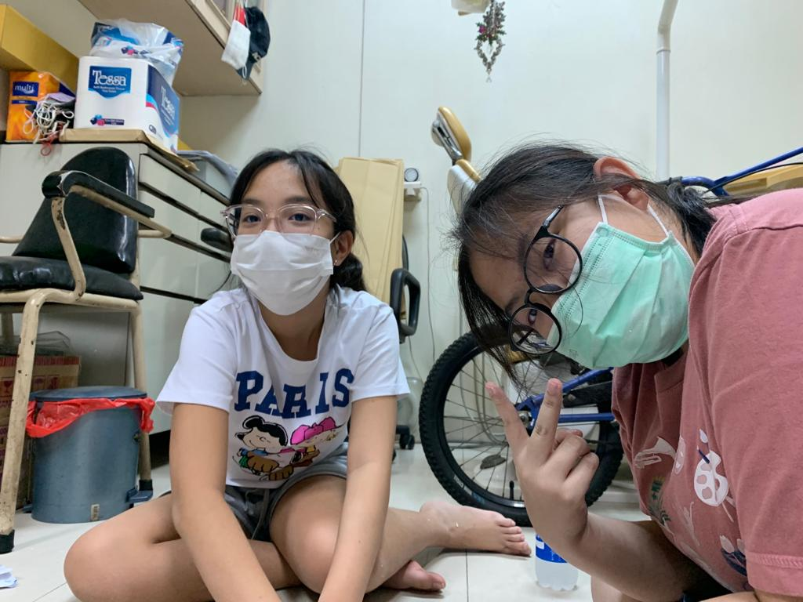
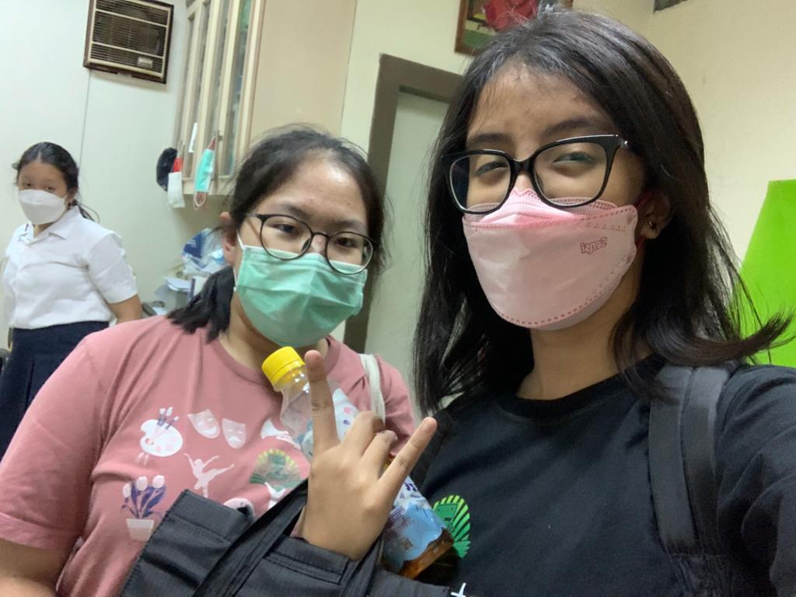
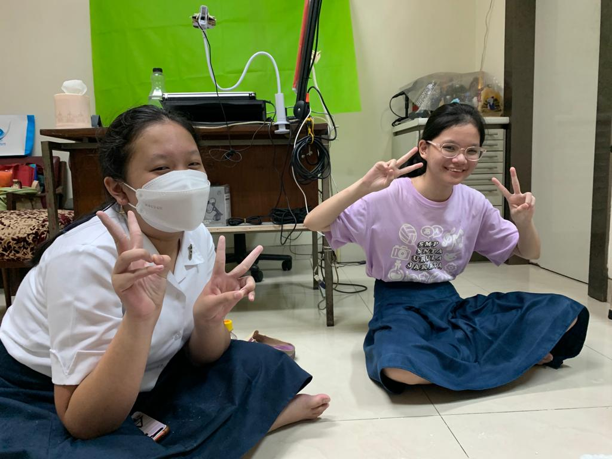
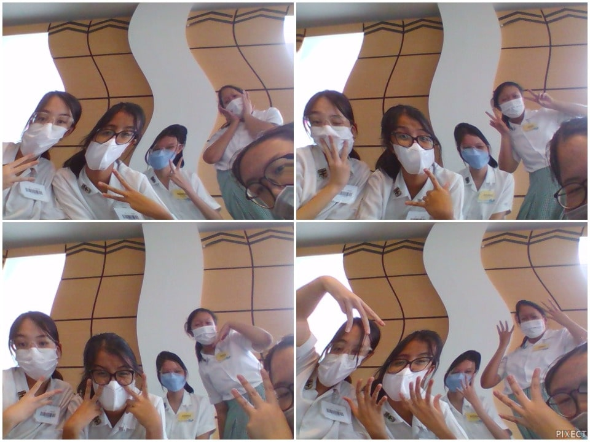

PEMBUATAN SENDOK BIODEGRADABLE DAN DAMPAK PRODUKNYA TERHADAP LINGKUNGAN SEKITAR |
|

KATA PENGANTAR
Puji Syukur pada Tuhan yang Maha Esa karena telah melimpahkan rahmat-Nya kepada peneliti agar peneliti bisa menyelesaikan karya ilmiah yang berjudul “Membuat Sendok Biodegradable dan Dampak Produknya Terhadap Lingkungan Sekitar” dan menyebarkan manfaatnya bagi lingkungan sekitar. Dalam laporan ini, terdapat pembahasan mengenai percobaan yang dilakukan oleh peneliti dalam membuat sendok biodegradable.
Karya ilmiah ini disusun untuk memenuhi persyaratan tugas Integrated Learning IPA, TIK, Bahasa Inggris, dan Agama yaitu membuat produk ramah lingkungan. Selain itu, karya ilmiah ini dibuat dengan tujuan untuk membantu lingkungan sekitar kami menggunakan sendok biodegradable.
Selama penelitian dan penyusunan karya ilmiah ini, peneliti menyadari ada banyak sekali rintangan dan halangan yang dihadapinya. Namun, berkat bantuan, dorongan, serta bimbingan dari guru-guru pembimbing dalam tugas Integrated Learning ini, akhirnya karya ilmiah ini dapat terselesaikan dengan baik. Maka dari itu, peneliti mengucapkan terima kasih kepada guru-guru pendamping atas waktu, tenaga, fasilitas, dan bantuan lain yang telah diberikan kepada peneliti agar bisa menyelesaikan karya ilmiah ini.
Akhir kata, peneliti mengakui bahwa karya ilmiah ini masih jauh dari sempurna. Maka dari itu, peneliti juga meminta maaf jika ada kesalahan dalam karya ilmiah ini. Peneliti juga dengan senang hati menerima kritik dan saran dari para pembaca agar peneliti dapat belajar dari kesalahan yang telah dilakukan sehingga dapat menjadi lebih baik. Peneliti berharap karya ilmiah tentang pembuatan produk sendok biodegradable ini dapat memberi manfaat bagi lingkungan sekitar serta para pembaca.
Playlist
Songs to play while you read through our website!



